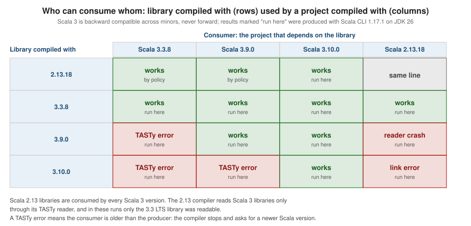

Versions, Compatibility & JDKs
|
This content was generated with the assistance of AI and should be verified against the official documentation before being relied on in production. |
This page is written against Scala 3.10.0 (released 2026-10-12) and every program and command on it was run with Scala
CLI 1.17.1, checked on 2026-10-15, mostly on JDK 26 and, where the JDK matters, also on JDK 17 and 21 on macOS. Where a
result needs another compiler it was produced with Scala 3.3.8, 3.9.0 or 2.13.18 from Maven Central through the same
Scala CLI. The page answers four practical questions: which Scala version should a project use, which versions can use
the output of which others, what the compiler’s -source setting really controls, and which JDK a given Scala version
needs. The release lines themselves are introduced in
Getting Started & Versions, and installing a JDK is
covered in Installing Scala; this page does not repeat them, it
goes deeper on compatibility. Upgrading a real project from one Scala 3 version to the next is the subject of
Upgrading Between Scala 3 Versions, and the
Scala 2 relationship of
Scala 2 & Scala 3 Compatibility.
The examples use the trailhead scenario: a small library of trail types and a Planner that computes walking times.
The Next and LTS model in one table
Scala 3 ships two kinds of line from the same repository. Scala Next gets a new minor release every few months with new language features and removals; Scala LTS gets only patch releases, which stay compatible with each other in both directions. The release lines at the check date were:
| Line | Latest at the check date | Role |
|---|---|---|
Scala 3.10 (Next) |
3.10.0, 12 October 2026 |
applications that want the newest features; first Next release after 3.9 LTS |
Scala 3.9 (LTS) |
3.9.0, 3 September 2026 |
the line the Scala team advises for publishing libraries |
Scala 3.3 (previous LTS) |
3.3.8, 10 June 2026 |
only while consumers are stuck on it; still runs on JDK 8 |
Scala 2.13 |
2.13.18, 24 November 2025 |
the Scala 2 line still in wide use |
The 2022 compatibility plans of the Scala team boil the choice down to a rule of thumb: treat the compiler version as one more dependency. A patch bump is a no-brainer, a minor bump deserves the same care as any dependency minor, and you should not cross-compile between Scala 3 versions. Applications follow Scala Next, or stay on LTS if they want the most conservative path. Libraries follow the latest LTS unless they are built around a Next-only feature, because a library compiled by a newer minor cannot be used by a project on an older one, as the next sections show.
Four kinds of compatibility
"Is version A compatible with version B?" has four different answers, and mixing them up causes most upgrade surprises.
| Kind | Question it answers | Where it fails |
|---|---|---|
Source |
Does the same source file compile, with the same meaning, under both compilers? |
at compile time, as a syntax or type error; the Scala 3 reference states that Scala 3 does not guarantee it between minor versions |
Binary |
Can bytecode compiled against one version be linked with another at run time? |
at run time, as a |
TASTy |
Can the compiler read the |
at compile time, as a "TASTy signature has wrong version" error |
Behavior |
Does the code do the same thing? |
silently; not checked mechanically |
Binary compatibility is a property of a sequence of versions and has a direction. Backward compatibility means code compiled on an older version links with newer ones; forward compatibility means code compiled on a newer version runs on older ones. The rules for Scala 3, taken from the official page on the binary compatibility of Scala releases, are:
-
Within one minor version (3.9.0, 3.9.1, …) Scala 3 guarantees both backward and forward compatibility. That covers an entire LTS series such as 3.3.x.
-
Across minor versions inside the 3.x series it guarantees backward compatibility only. A library compiled with Scala 3.x can be used by a project compiled with Scala 3.y when y is greater than or equal to x, and never the other way.
-
Scala 3.x is backward compatible with libraries compiled by Scala 2.13.y, except for experimental Scala 2 features, which notably include macros.
-
None of these guarantees applies to experimental features and APIs.
-
Library artifacts (
scala-library,scala-reflect,scala3-library_3) are checked with MiMa; for Scala 2 up to 2.13.18 both directions were guaranteed within a major release, and the page warns that this may change.
Source compatibility and the -source setting
Scala 3 does not promise that a program that compiles on 3.x compiles unchanged on 3.y. The compiler team tests each
release against hundreds of open-source projects and fixes breakages that are not intended, but removals of legacy
syntax are intended. The 3.10 line is the first Next release after 3.9 LTS, and it turned several long-deprecated
constructs into errors. The -source option lets a project choose which version of the language rules the compiler
applies, so that a compiler upgrade does not force a source change at the same moment.
The values accepted by Scala 3.10.0 are listed by the compiler help (scala --scalac-help): 3.0 to 3.11, each with
a -migration variant, plus future and future-migration. The default is the compiler’s own version, 3.10.
-
A plain version (
-source:3.3) applies the rules of that language version: constructs that were still allowed there are accepted again. -
A
-migrationversion (-source:3.4-migration) behaves like the plain version but turns hard errors into migration warnings, and in combination with-rewriteit rewrites the source. -
futurepreviews changes that are planned for later minors and may grow over time;future-migrationadds migration help for them. -
A file can also select a language version with an import at the top, such as
import scala.language.future; the import wins over the command-line setting for that file, and at most one such import is allowed per file.
The program below uses A with B for an intersection type, a Scala 2 form that Scala 3.4 deprecated. Under 3.10 it is
an error, and the message names both the replacement and the rewrite switch.
//> using scala 3.10.0
trait Named:
def name: String
trait Sized:
def km: Double
def label(x: Named with Sized): String = s"${x.name}: ${x.km}"
@main def withDemo(): Unit =
println(label(new Named with Sized { val name = "Pico"; val km = 1.5 }))Compiling it with the default -source fails:
-- [E003] Syntax Error: With.scala:8:19
8 |def label(x: Named with Sized): String = s"${x.name}: ${x.km}"
| ^^^^
|with as a type operator has been deprecated; use & instead
|This construct can be rewritten automatically under -rewrite -source 3.4-migration.
|
| longer explanation available when compiling with `-explain`
1 error found
Compilation failedWhat the same file does with other -source values, as run here with --scalac-option -source:<value>:
| Option | Result on 3.10.0 |
|---|---|
|
compiles and prints |
|
compiles with a syntax warning ("with as a type operator has been deprecated; use & instead") and prints |
|
the same error as the default |
|
"xyz is not a valid choice for -source" |
The migration route rewrites the file in place. Running scala compile With.scala --scalac-option -rewrite
--scalac-option -source:3.4-migration printed [patched file .../With.scala] after the warning, and line 8 of the
file became:
def label(x: Named & Sized): String = s"${x.name}: ${x.km}"The file then compiled with no options and printed Pico: 1.5. The workflow for an upgrade is therefore: raise the
compiler version, add -source:<old minor> if the build breaks, run the matching -migration rewrite, remove the
option. Note that -source governs the language rules, not the binary output: code compiled with the compiler 3.10 and
-source:3.3 still has TASTy version 28.10 and cannot be read by 3.9.
Binary and TASTy compatibility
Scala 3 compiles to ordinary class files plus a .tasty file for every top-level definition. The class files are what
the JVM links; the TASTy files carry the full typed tree and are what the next compiler reads to see the exact types of
an already compiled library. They are distributed together in the same JAR. That gives two independent checks. At run
time the JVM needs the bytecode signatures to match, which is binary compatibility. At compile time the compiler needs
to understand the TASTy file, which is TASTy compatibility, and it is the check that most often stops people who move
a library to a newer compiler.
A TASTy version has the form <major>.<minor>-<experimental>, for example 28.3 for Scala 3.3 and 28.10 for Scala 3.10;
an experimental number other than zero marks an unstable file. A compiler reads the TASTy of another stable compiler
when the other compiler’s minor version is not newer than its own, which is the same rule as for binary
compatibility. The standard library counts too: a change to its API also bumps the TASTy minor version.
Running the matrix
To see the rules rather than just read them, one small library was compiled with each compiler and consumed by each compiler. The library:
package trailhead
enum Difficulty:
case Easy, Moderate, Hard
final case class Trail(name: String, lengthKm: Double, difficulty: Difficulty)
object Trails:
def describe(t: Trail): String = s"${t.name} (${t.lengthKm} km, ${t.difficulty})"and the application:
import trailhead.*
@main def run(): Unit =
println(Trails.describe(Trail("Pico Alto", 12.5, Difficulty.Hard)))Each library version was produced with scala compile lib/Trails.scala -S <version> -d trails-<version>.jar, which
packages the classes and TASTy files into a JAR, and each application was run with scala run app/Main.scala -S
<version> --jar trails-<version>.jar. The nine combinations gave:
| Library compiled with | Application on 3.3.8 | Application on 3.9.0 | Application on 3.10.0 |
|---|---|---|---|
3.3.8 |
prints the line |
prints the line |
prints the line |
3.9.0 |
TASTy error |
prints the line |
prints the line |
3.10.0 |
TASTy error |
TASTy error |
prints the line |
Every application whose minor version is not older than the library’s works, and every older one fails, exactly as "backward compatible across minors, never forward" predicts. The failure of a 3.3.8 application reading a 3.9.0 library:
error while loading Trails,
class file trailhead/Trails.class is broken,
reading aborted with class dotty.tools.tasty.UnpickleException:
TASTy signature has wrong version.
expected: {majorVersion: 28, minorVersion: 3}
found : {majorVersion: 28, minorVersion: 9}
This TASTy file was produced by a more recent, forwards incompatible release.
To read this TASTy file, please upgrade your tooling.
The TASTy file was produced by Scala 3.9.0.A 3.9.0 application reading a 3.10.0 library gets a clearer message, which names the compiler that produced the file and the range this compiler accepts:
error while loading Trails,
TASTy file trailhead/Trails.tasty could not be read, failing with:
Forward incompatible TASTy file has version 28.10, produced by Scala 3.10.0,
expected stable TASTy from 28.0 to 28.9.
To read this TASTy file, use a newer version of this tool compatible with TASTy 28.10.
Please refer to the documentation for information on TASTy versioning:
https://docs.scala-lang.org/scala3/reference/language-versions/binary-compatibility.htmlBoth errors are followed by follow-up errors in the application ("value describe is not a member of object trailhead.Trails") because the library could not be loaded; the TASTy message is the one to read. The fix is never in the application code: either upgrade the application’s Scala version or ask the library for a release built with an older line. This is why the Scala team recommends that libraries publish with the LTS line.

Using a Scala 2.13 library from Scala 3
The other direction of the guarantee is that Scala 3 can use libraries compiled by Scala 2.13. The Scala 3 compiler reads the Scala 2 pickles, so a Scala 2.13 artifact only needs the right suffix in its coordinates. In this program the parser-combinators module, published only for Scala 2.13 in this version, is used from Scala 3.10.0:
//> using scala 3.10.0
//> using dep org.scala-lang.modules:scala-parser-combinators_2.13:2.5.0
import scala.util.parsing.combinator.RegexParsers
object GradeParser extends RegexParsers:
def grade: Parser[Int] = "grade" ~> """\d+""".r ^^ (_.toInt)
@main def use213(): Unit =
println(GradeParser.parseAll(GradeParser.grade, "grade 3"))[1.8] parsed: 3The full coordinates carry _2.13 because a single colon (org:name_2.13:version) selects the artifact exactly as
named; with a double colon Scala CLI would add the suffix of the compiler’s own binary version. In sbt the equivalent
is ("org.scala-lang.modules" %% "scala-parser-combinators" % "2.5.0").cross(CrossVersion.for3Use2_13), shown here
without having been run. The exception in the guarantee matters in practice: a Scala 2 library that is built around
macros will not work from Scala 3, because Scala 2 macros do not run in the Scala 3 compiler; such libraries need a
Scala 3 port.
Reading Scala 3 from Scala 2.13
The reverse direction is much narrower. The Scala 2.13 compiler has a TASTy reader behind the -Ytasty-reader option
that lets Scala 2.13 code use a Scala 3 library, limited to what Scala 2 can express and to the TASTy versions the 2.13
reader understands. Two small libraries, one with a case class and one with a plain object, were compiled by each Scala 3
version and used from a Scala 2.13.18 object Main, with the Scala 3 library on the classpath. Without the option the
compiler stops with "Add -Ytasty-reader to scalac options to parse the TASTy". With it:
| Library compiled with | Scala 2.13.18 result |
|---|---|
3.3.8 |
compiles and runs |
3.9.0 |
the 2.13 compiler crashes with an assertion ("no symbol at Addr(25)") while typing the call |
3.10.0 |
fails: the case-class library gives "could not find package scala.deriving"; the object library compiles but throws |
The last row has a clear cause. Since Scala 3.8 the Scala 3 standard library is its own scala-library artifact
compiled by Scala 3, so code compiled by 3.8 or later can call library methods that the Scala 2.13 library does not
have. The release notes of 3.10 say it plainly: cross-compilation between Scala 2 and Scala 3.10 is no longer
supported, and cross-compiled libraries are expected to remain on 3.9 LTS. A related observation shows how the
standard library changed. The same program, which prints scala.util.Properties.versionNumberString, reports a
different thing depending on the line:
@main def which(): Unit =
println(s"Scala ${scala.util.Properties.versionNumberString} on JDK ${Runtime.version().feature()}")Scala 2.13.18 on JDK 17 <- compiled and run with Scala 3.3.8
Scala 3.9.0 on JDK 17 <- 3.9.0
Scala 3.10.0 on JDK 17 <- 3.10.0The first line is the Scala 3.3 LTS line, whose standard library is still the Scala 2.13 one; from 3.8 the library version equals the compiler version. The same three lines were printed on JDK 21 and on JDK 26.
Source: Scala 3.10 released
For library authors
A library multiplies compatibility problems, because its users pick the compiler version that decides whether they can read it. The working rules for a Scala 3 library are:
-
Build with the latest LTS (3.9.0 at the check date) unless a Next-only feature is essential. Moving the library to a newer minor, for example from 3.3 LTS to 3.9 LTS, is a decision that cuts off users on the older line, so publish it in a minor release of your library, not a patch release.
-
Do not cross-compile for several Scala 3 minors. One build per library version is enough, because of the backward guarantee. Cross-building for Scala 2.13 and Scala 3 remains possible on the 3.9 LTS line; it is not possible for 3.10.
-
Keep the library’s own dependencies on the same or older line than the library, since a project can only read what it is newer than.
-
Check binary compatibility mechanically with MiMa before every release, and TASTy compatibility with TASTy-MiMa. Compatibility between versions of the same library is what makes dependency resolution safe: build tools such as sbt pick the newest version of a library on the classpath and assume the newest is backward compatible with the rest.
MiMa
MiMa, the Migration Manager, compares the class files of two JARs and reports the changes that would cause a linkage
error for code compiled against the old one. Adding a parameter, even with a default value, is source compatible but
binary incompatible: the old method signature disappears. The following two versions of a Planner show that. Version 1:
package trailhead
object Planner:
def walkingMinutes(lengthKm: Double, ascentM: Int): Int =
(lengthKm / 5.0 * 60 + ascentM / 600.0 * 60).round.toIntVersion 2 adds a rest allowance with a default value, so existing source code still compiles:
package trailhead
object Planner:
def walkingMinutes(lengthKm: Double, ascentM: Int, restMinutes: Int = 0): Int =
(lengthKm / 5.0 * 60 + ascentM / 600.0 * 60).round.toInt + restMinutesA client compiled against version 1 calls walkingMinutes(double, int). Running that client against the version 2 JAR:
Exception in thread "main" java.lang.NoSuchMethodError: 'int trailhead.Planner$.walkingMinutes(double, int)'
at Main$package$.client(Main.scala:4)
at client.main(Main.scala:3)MiMa catches this before the release. Its command-line version runs from Scala CLI by selecting its main class; both
JARs are given on the command line, with the Scala library on -cp:
scala run empty.scala -S 3.10.0 --dep com.typesafe::mima-cli:1.2.1 \
--main-class com.typesafe.tools.mima.cli.Main -- -v -cp "$SCALA_LIBS" v1.jar v2.jartrailhead.Planner.walkingMinutes(Double,Int)Int: DirectMissingMethod: method walkingMinutes(Double,Int)Int in object trailhead.Planner does not have a correspondent in new versionIn a real project MiMa runs as an sbt plugin and compares the build against the previous release from Maven Central. This configuration is the usual shape and was not run here, because sbt projects are outside what this page executes:
// project/plugins.sbt
addSbtPlugin("com.typesafe" % "sbt-mima-plugin" % "1.2.1")
// build.sbt
ThisBuild / scalaVersion := "3.9.0"
mimaPreviousArtifacts := Set("org.example" %% "trailhead" % "1.0.0")MiMa 1.2.1 or later is required to check artifacts built with Scala 3.9 or 3.10; the 3.10 release notes say 1.2.1 adds support for both and fixes several false positives. The companion tool TASTy-MiMa, a separate project from the Scala Center, checks the same compatibility at the TASTy level; the official guide describes it as a young project with bugs to be expected.
@unroll: adding parameters without breaking binary compatibility
Library authors used to avoid the problem above by duplicating methods by hand or by code generation. SIP-61 adds the
@unroll annotation: on a parameter with a default value it generates hidden forwarders with the old signatures, so an
already compiled client keeps linking. It is a preview feature of Scala 3.10; on 3.9 LTS the annotation is marked
experimental and the compiler stops with "class unroll is marked @experimental: under review as part of SIP-61" unless
-experimental is passed. Version 2 of the planner with the annotation:
package trailhead
import scala.annotation.unroll
object Planner:
def walkingMinutes(lengthKm: Double, ascentM: Int, @unroll restMinutes: Int = 0): Int =
(lengthKm / 5.0 * 60 + ascentM / 600.0 * 60).round.toInt + restMinutesThe compiler output (javap on the compiled object) shows the extra forwarder next to the three-parameter method and
its default-argument accessor:
public int walkingMinutes(double, int, int);
public int walkingMinutes$default$3();
public int walkingMinutes(double, int);The same client compiled against version 1 now prints 240 when run against this version 2 JAR, where it threw
NoSuchMethodError above; MiMa reports no problems for the pair. The rules in the reference are that the annotation
applies to term parameters of effectively final methods (def in an object, final def in a class or trait, class
parameters and secondary constructors), that the annotated parameter and every parameter after it must have defaults,
that only appended parameters may be added and that the compiler does not check that @unroll sits at the right
version boundary: keep one at every previous binary boundary when you add another wave of parameters. Case classes get
the same treatment for the constructor, copy, apply and fromProduct.
One observation is worth recording. The reference page and the 3.10 release notes present @unroll as available under
-preview since 3.10.0, and the announcement’s example uses //> using options -preview. On 3.10.0 as run here the
annotation compiled, and generated the forwarder, without the flag, so the gate was not observable. Pass -preview
anyway: it documents that the file depends on a preview feature, and it keeps the build correct if the gate is enforced
in a later patch release.
The JDK matrix
Scala compiles to JVM bytecode and runs on a JDK, and the JDK is a second axis of compatibility next to the compiler.
Scala 3.3 LTS through 3.7 support JDK 8 and above; starting with 3.8 the minimum is JDK 17, and 3.9 LTS and 3.10 keep
it. The reason, given by the Scala team, is that newer JDKs restrict the sun.misc.Unsafe functionality that the
original lazy-val implementation relied on. The minimum Scala 3 versions per JDK, from the official table:
| JDK | 3.3 LTS | 3.9 LTS | Non-LTS (Next) |
|---|---|---|---|
27 |
— |
— |
3.10.0 (forthcoming) |
26 |
3.3.8 |
3.9.0 |
3.8.0 |
25 (LTS) |
3.3.7 |
3.9.0 |
3.7.1 |
21 (LTS) |
3.3.1 |
3.9.0 |
3.4.0 |
17 (LTS) |
3.3.0 |
3.9.0 |
3.4.0 |
11 (LTS) |
3.3.0 |
— |
3.4.0 |
8 (LTS) |
3.3.0 |
— |
3.4.0 |
The text under the table says "3.3.6+" for JDK 25 while the table says 3.3.7; this page follows the table, as do the other pages of the section, and the practical advice is to use the latest 3.3 patch in any case. The documentation also states that even a combination that is not listed usually works, and that the latest patch of the line is always recommended. For Scala 2 the minimums are, for JDK 26, 2.13.18 and 2.12.21; for JDK 25, 2.13.17 and 2.12.21; for JDK 21, 2.13.11 and 2.12.18; for JDK 17, 2.13.6 and 2.12.15; for JDK 8, 2.13.0 and 2.12.0.
The build tools have their own floor. The official tooling table gives the minimum working versions:
| JDK | Scala CLI | sbt | Mill |
|---|---|---|---|
25 (LTS) |
1.10.0 |
1.9.0 |
1.0.0 |
21 (LTS) |
1.0.0 |
1.9.0 |
0.11.5 |
17 (LTS) |
1.0.0 |
1.6.0 |
0.7.0 |
11 (LTS) |
1.0.0 |
1.1.0 |
0.1.5 |
8 (LTS) |
1.0.0 |
1.0.0 |
0.1.0 |
The documentation adds that the sbt developers mainly test JDK 8, 11 and 17, that 21 and 25 are believed to work, and that some tools print warnings on startup on JDK 25 and later. JDK 17, 21 and 25 are all good choices for compiling and running; the Scala team builds and tests with Temurin or Zulu, and the differences between distributions rarely matter. Non-LTS JDKs are supported on a best-effort basis: problems found there are not release blockers.
The same program was run on three JDKs installed on the machine: JDK 17.0.14 and 21.0.10 (JetBrains Runtime builds) and
Oracle JDK 26. Each combination of the which program above with 3.3.8, 3.9.0 and 3.10.0 ran correctly (the output
was shown earlier), so on the lines of this section JDK 17, 21 and 26 all work. JDK 8, 11, 25 and 27 are not installed
here, and the rows for them are from the official table, not from a run.
-release and the bytecode target
Two compiler settings decide what an artifact needs at run time. The bytecode level is the class file version, and the API
level is which JDK classes the code may use. The class file version of the same library compiled by each compiler,
checked with javap -v:
| Compiler | Class file major version | Meaning |
|---|---|---|
3.3.8 |
52 |
Java 8 bytecode |
3.9.0 |
61 |
Java 17 bytecode |
3.10.0 |
61 |
Java 17 bytecode |
3.10.0 with |
65 |
Java 21 bytecode |
The -release option (also spelled -java-output-version) selects the output level and restricts the visible JDK API to
that release, like javac --release. In 3.10.0 the accepted values are 17 to 26, so -release:8 is rejected with
"8 is not a valid choice for -java-output-version"; the old levels belong to the 3.3 LTS line. The official advice is to
compile on JDK 17 or later and use --release to keep JDK 8 working for users who stay there, or to build releases on
the oldest JDK you support. A newer JVM can nearly always run code compiled for an older one.
The lazy-val warning on newer JDKs
The lazy-value implementation of the Scala 3.3 LTS line uses sun.misc.Unsafe. Running a 3.3.8 program on JDK 26 prints
a warning from the JVM. The program is the weather forecast of the trailhead scenario:
//> using scala 3.3.8
object Weather:
lazy val forecast: String =
println("computing forecast")
"clear"
@main def lazyDemo(): Unit =
println(Weather.forecast)
println(Weather.forecast)Run on JDK 26 as compiled, the JVM prints the following (the four warning lines are indented here only to keep them apart from the program output):
WARNING: A terminally deprecated method in sun.misc.Unsafe has been called
WARNING: sun.misc.Unsafe::objectFieldOffset has been called by scala.runtime.LazyVals$ (file:/.../scala3-library_3-3.3.8.jar)
WARNING: Please consider reporting this to the maintainers of class scala.runtime.LazyVals$
WARNING: sun.misc.Unsafe::objectFieldOffset will be removed in a future release
computing forecast
clear
clearAdding the 3.3.8 option -Yfuture-lazy-vals together with -release:17 (the flag needs an explicit output version of 9
or later; without it the compiler says "-Yfuture-lazy-vals is set, but it requires explicit -java-output-version set
to minimum required version 9 or higher") compiles the program with the new implementation. Running its classes on JDK
26 printed only the program’s own three lines, with no warning. On Scala 3.10.0 the program ran without any warning
as well. The JVM message says the method will be removed in a future release, which is why the lazy-value
implementation changed in later Scala lines. When the 3.3.8 compiler itself runs on JDK 26 the same message is printed
once more, before the program output.
Choosing a version, a checklist
-
Application on the JVM, JDK 17 or later: use Scala 3.10, or 3.9 LTS if you prefer fewer changes per upgrade.
-
Library with users on unknown versions: publish with 3.9 LTS and check each release with MiMa 1.2.1 or later.
-
Library that must still serve Scala 2.13 users: stay on 3.9 LTS for the cross-built artifacts, since cross-compilation with 3.10 is not supported.
-
Project stuck on JDK 8 or 11: use the 3.3 LTS line (3.3.8 at the check date) and plan the move to JDK 17.
-
Running on JDK 25 or 26: use at least 3.3.7 or 3.3.8, 3.7.1 or 3.8.0, or 3.9.0 as the table says.
-
Any build: pin the compiler version in the build (
//> using scala 3.9.0,scalaVersionin sbt) and bump it deliberately;3.9.ltsandltsin Scala CLI resolve to the newest release of a line at run time.
Where the books are outdated
-
The Scala 3 Book and the Tour were written when Scala 3.0 to 3.3 were current and speak of Scala 3 as one version; today "which version?" depends on the line (Next, 3.9 LTS or 3.3 LTS) and on who consumes the library.
-
Advice that Scala 2.13 can always read Scala 3 libraries through
-Ytasty-readeris out of date: the runs above show that the 2.13.18 reader worked with a 3.3 library only, and that 3.10 gave up cross-compilation. -
The Scala 3 Reference page on source compatibility still lists the default language version as 3.2 in its text, even though the compiler’s own default is its version (3.10 here) and the accepted
-sourcevalues now run to 3.11 andfuture; trustscala --scalac-helpfor the current list. -
Books and blog posts mention JDK 8 and 11 as ordinary targets; since Scala 3.8 the floor is JDK 17.
-
The experimental
-scala-output-versionflag, which 2022 posts describe, was removed in 3.2 and has no replacement, which is why libraries are advised to publish with the LTS line.
Pitfalls
-
Updating the compiler of a library is a minor-version event. A library compiled with 3.9 breaks consumers on 3.3 with a TASTy error, even when the library’s API did not change.
-
A TASTy error is not a source error. Fixing the application code does not help; the application’s Scala version must be at least the library’s.
-
Default values are not binary compatible. Adding a parameter with a default breaks already compiled clients with a
NoSuchMethodError; use@unroll(preview) or add an overload by hand, and let MiMa prove it. -
-sourcedoes not downgrade the output. It changes how the compiler reads your source, not the TASTy version it writes. -
Do not trust the program output of
versionNumberStringto identify the compiler. On the 3.3 LTS line it reports the 2.13 library version. -
3.6.0 and 3.6.1 must never be used, and 3.8.0 had a runtime regression fixed in 3.8.1, as noted in Getting Started & Versions.
What was run and what was not
All commands on this page were run with Scala CLI 1.17.1, including compiling with 3.3.8, 3.9.0, 3.10.0 and 2.13.18,
the matrix of nine consumers, the -source experiments, the -rewrite migration, the @unroll client, MiMa from Maven
Central, and the three-JDK run. Not run: the sbt snippets (MiMa plugin, CrossVersion.for3Use2_13) and the JDK rows for
8, 11, 25 and 27, which come from the official tables.